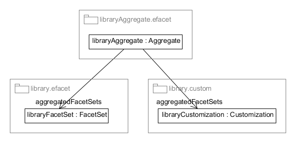
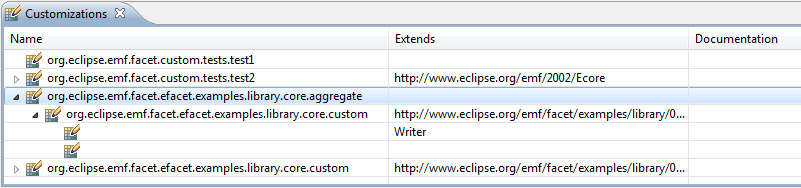
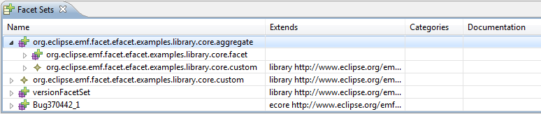

You can create Aggregates, to group FacetSets and Customizations into a single logical unit. An Aggregate aggregates FacetSets and Customizations. This should not be confused with a hierarchical FacetSet, which is a composition instead of an aggregation. Also note that Customizations and Aggregates are both FacetSets (they extend the FacetSet metaclass).
Aggregates are defined in plug-in org.eclipse.papyrus.emf.facet.aggregate.metamodel. An aggregate is defined in a file with the ".efacet" file extension, because the aggregate metamodel extends the facet metamodel, and this allows transparent registration of aggregates in the FacetSet and Customization catalogs.
Loading an Aggregate means loading all its aggregated FacetSets and Customizations. And unloading an Aggregate means unloading all its aggregated FacetSets and Customizations.
To create a new aggregate:
Here is an example of an Aggregate (named libraryAggregate) for a library metamodel, which aggregates a FacetSet (named libraryFacetSet) and a Customization (named libraryCustomization) :

Since there is no UI tooling for creating Aggregates as yet, you will have to use a generic model editor or write the XMI by hand. Here is an example XMI file that defines an Aggregate:
<?xml version="1.0" encoding="ASCII"?>
<aggregate:Aggregate xmi:version="2.0"
xmlns:xmi="http://www.omg.org/XMI"
xmlns:xsi="http://www.w3.org/2001/XMLSchema-instance"
xmlns:efacet="http://www.eclipse.org/papyrus/emf/facet/efacet/0.2.incubation/efacet"
xmlns:aggregate="http://www.eclipse.org/papyrus/emf/facet/aggregate/0.2.incubation/aggregate"
name="org.eclipse.papyrus.emf.facet.efacet.examples.library.core.aggregate">
<aggregatedFacetSets xsi:type="efacet:FacetSet" href="platform:/plugin/org.eclipse.papyrus.emf.facet.efacet.examples.library.core/library.efacet#/"/>
<aggregatedFacetSets xsi:type="efacet:FacetSet" href="platform:/plugin/org.eclipse.papyrus.emf.facet.efacet.examples.library.core/library.custom#/"/>
</aggregate:Aggregate>
The Aggregates are displayed in the Customizations and Facet Sets catalog views. You can use these views to check that your Aggregate was correctly registered :


Copyright © 2012 CEA LIST. All rights reserved. This program and the accompanying materials are made available under the terms of the Eclipse Public License 2.0 which accompanies this distribution, and is available at https://www.eclipse.org/legal/epl-2.0/. Contributors: Nicolas Bros (Mia-Software)